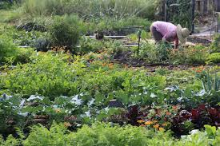
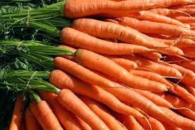
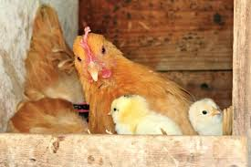
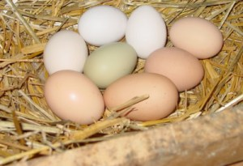

All About the Farm
I grew up in a suburban environment and most of the yards in our neighborhood
were large, yet very few were growing anything edible. When I moved to Seattle
as an adult, I was impressed to see quite the opposite! I started to dabble in a
tiny apartment garden, and was able to grow most of the greens that I usually
purchase at the store or farmer's market. Since becoming a parent,
I've become even more discriminating about what our family eats. The more
I learn about the impacts of large scale commercial agriculture on our environment
and communities, the less I want to support those systems. Further, the food coming
out of commercial agriculture lacks nutritional diversity. There are few things as
tasty, nutritious, and sastisfying as fresh produce right from your garden!
Tips for success in a backyard farm and garden:
Tips for success in a backyard farm and garden:
- Keep it small. The first mistake we made was trying to get everything up and running the very first season. It takes time to build up the soil nutrients, especially in a backyard, which typically has compacted clay with very little (if any) topsoil. Starting with one growing area at a time and pacing ourselves minimized the amount of work we spent fixing our mistakes. It also helped keep morale up! Farming is hard work.
- Focus on perennials. Most commercial farms grow only annuals crops like corn, wheat, and lettuce. This results in complete replanting every year, intensive tilling which depletes the soil, and so much extra work! In our garden we have tried to install a permanent edible landscape to reduce our own workload and to increase the resiliency of our food source. You see, perennial plants have natural adaptations to withstand seasonal and annual fluctations in conditions. They tend to survive periods of heat, flooding, and pest infestation better than most annual crops. Also, we are lazy and don't want to have to replant every spring!
- Plant what you'll eat. It's really easy to grow radishes just about anywhere in your yard, but will you want to eat them? We didn't, and so they ended up in with the food scraps for the chickens (and then the compost pile). Assess which produce you purchase the most and see if there is a good place in your yard for it to grow.
- Choose a diversity. Don't limit yourself to one type of produce, or even to one variety of produce. We've found mixed plantings to be the most sucessful. Sometimes the whiteflies love one type of kale but leave the others untouched. Different varieties of peas will be ready for harvest at different times, so by growing a mixture you'll have fresh peas every week. Also, learning which plants like to grow together helps to reduce plant stress and disease.
- Be creative. Creating a garden can be very fun and rewarding. Make it your own! There are so many ways to put the components together.

Select your flock configuration and then how many eggs you might expect:
This flock configuration could yield
eggs per month and
eggs per year!